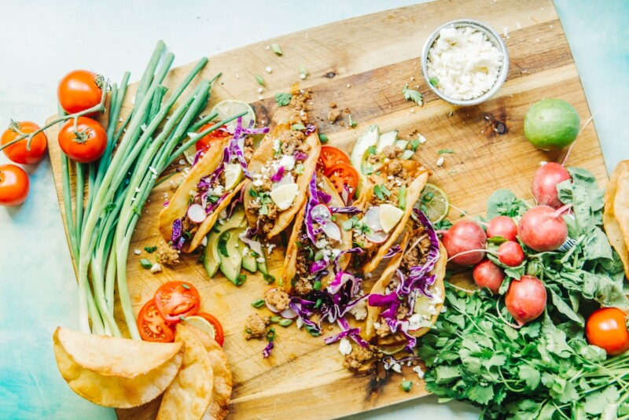

Ground Pork Tacos Receipe

For the ground pork tacos receipe
This is a 20 minute receipe made with pantry staples. this easy meal is
made with juicy and flavorful ground pork fried corn tortillas, and
fresh and colourful toppings.
Ingredients
- 1 ground pork
- 1 tablespoon soy-based liquid seasoning
- 1/2 tablespoon chipotle powder
- 1 clove garlic, minced
Pineaple Salsa
- 1 cup diced fresh pineaple
- 1/4 cup minced red onion
- 1 small jalapeno pepper, seeded and minced
- 2 tablespoons minced fresh cilantro
- 1/2 lime, juiced
- Salt to taste
- 8 (6 inch) corn tortillas
Preparation
- Combine ground pork, liquid seasoning, ground chipotle powder, and garlic in a bowl. Set aside for flavors to meld
- Combine pineapple, red onion, jalapeno, cilantro, lime juice, and salt in a bowl. Set pineapple salsa aside.
- Preheat a large skillet over high heat. Crumble ground pork into the hot skillet. Cook and stir until pork is completely browned and edges begin to crisp, 7 to 10 minutes. Drain any excess grease. Place pork in a bowl and keep warm. Wipe out skillet.
- Warm tortillas in skillet over medium-low heat, about 20 seconds per side. Divide meat mixture between tortillas and top with pineapple salsa